ロミオとジュリエット / 第2場面
二人の約束から、届かない手紙へ
約束で重ねた手が、争いで離れ、届くはずの手紙もすれ違う。三つの流れを、一つの大場面として続ける。
構成稿 · 本人推敲前 · 10名 · 上演尺は未設定
元の12場面の「3〜10」を、一つの大場面として読む台本です。
台詞は既存の下訳をもとに、演出指示に合わせて調整しています。「補筆案」「台詞案」は新しく用意した文言です。灰色がかった地の文章は動きとつなぎのト書きです。三つの見出しは、同じ場面の中での流れを示します。
第2場面の流れ · 1 / 3
約束と結婚
二人だけの窓辺
夜。客席から見て右斜め手前／ジュリエットの窓辺
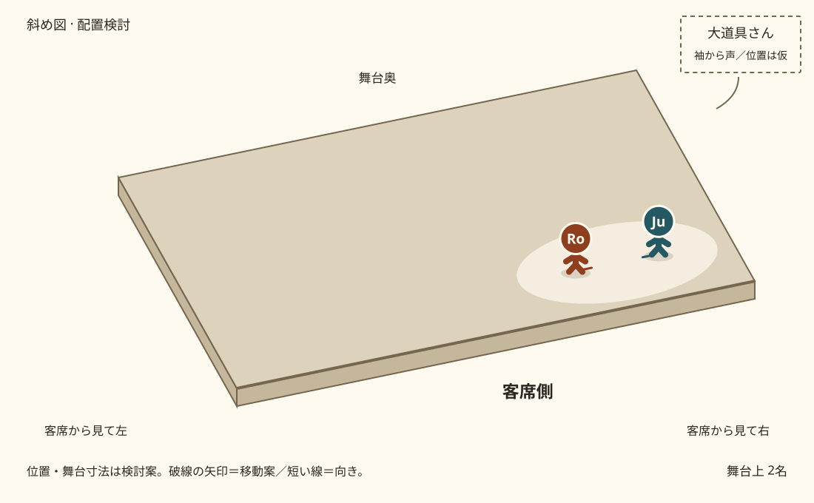
窓辺の二人／大道具さんの声／位置は検討案
仮面の人々はもういない。右斜め手前、ロミオとジュリエットだけに焦点が残る。二人の距離は近い。
ジュリエット
ロミオ、あと少しだけ。それで、本当におやすみ。
あなたの愛が誠実で、
結婚するつもりがあるのなら、
明日、私がそちらへ送る人に伝えて。
いつ、どこで式を挙げるのか。
私の持つものすべてを、あなたに預けます。
どこへでも、あなたについていく。
大道具さん台詞案
（袖から、大声で探す）ジュリエット！ ジュリエット、どこにいるの！
自分を探す声にジュリエットが気づく。二人はつないだ手を一度だけ離し、互いを見たまま、ジュリエットは声のする客席右の袖へ、ロミオは客席左の暗がりへ別々に退く。
演出メモ・登場人物
大道具さんが舞台袖から大声でジュリエットを探す。姿は見せず、二人を見つけた声にはしない。静かな二人の時間へ、その声が届く。二人は手を離し、ジュリエットは客席右の袖、ロミオは客席左の暗がりへ別々に退く。暗転は使わない。発声は大道具担当とし、具体的な担当者は未定。台詞の文言と、歩数・速度は案。
この流れに登場：ロミオ、ジュリエット。出入りの順はト書きに従う。
舞台外の声：大道具さん（袖）。大声でジュリエットを探す。姿は見せず、二人を見つけた声にはしない。 発声は大道具担当。具体的な担当者は未定。
- 始める合図
- 宴の人々が退場し、二人だけが残る。
- 次へ進む合図
- 探す声を受け、二人は手を離す。ジュリエットは客席右の袖へ、ロミオは客席左の暗がりへ別々に退き、暗転せず中央のロレンスへ焦点を移す。
背中の列と中央のロレンス
翌日。中央／ロレンスのもと
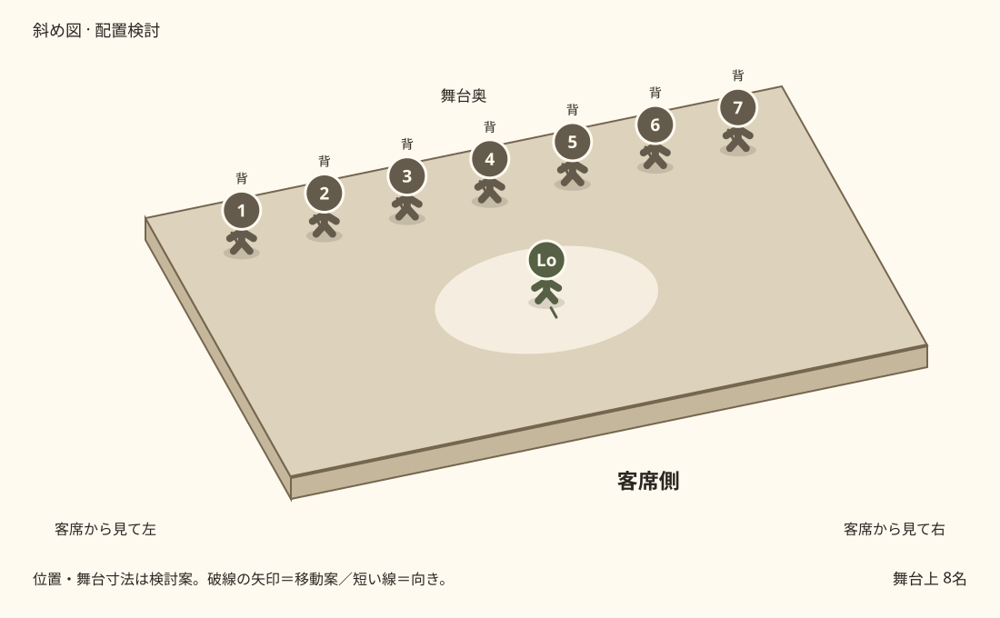
背中の列が中央を隠す／位置は検討案
右斜め手前の光を静かに落とし、暗転せず中央のロレンスへ移す。一夜を越え、翌日の時間になる。
ほかの七名が客席へ背中を向けたまま左右から横に滑り、ロレンスの奥で舞台奥の一列となる。ロミオとジュリエットはまだ入らない。
演出メモ・登場人物
暗転で場を切らず、光と出入りで翌日へ進める。ロレンスを先に置き、七名は客席に背中を向けたまま左右から横に滑って一列となる。七名は役名の人物ではなく、「見ていない人々」を担う。歩数・速度・光の変化量は未設定。
この流れに登場：ロレンス修道士。出入りの順はト書きに従う。
背を向ける七名：ロミオ・ジュリエット・ロレンスの担当以外の出演者。ここでは匿名の人々として並ぶ。
- 始める合図
- 二人が手を離して別々に退いた後、ロレンスが中央で待つ。
- 次へ進む合図
- 七名の背中の列が舞台奥で整い、ロミオとジュリエットが別々の斜めからロレンスのもとへ入る。
今回組み立てたつなぎのト書き
秘密の結婚
中央／秘密の結婚
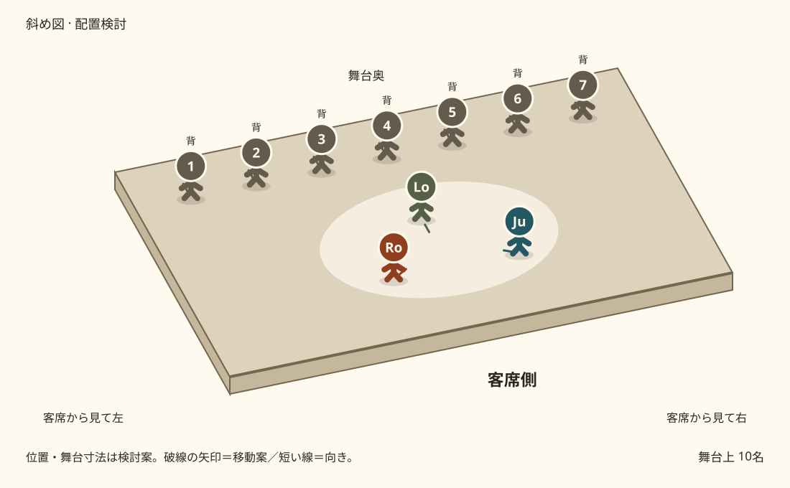
別々の斜めから、ロレンスの前へ／位置は検討案
ロミオは客席左斜め、ジュリエットは客席右斜めから別々に中央へ入る。二人はロレンスの前で初めて向き合う。七名は背を向けたまま、二人を見ない。
ロミオ
ジュリエット、あなたも私と同じほど喜んでいて、
それを私よりうまく言えるなら、
その声で、この空気まで甘くしてほしい。
今、二人が分かち合う幸せを、音楽のように聞かせて。
ジュリエット
言葉より豊かな想いは、飾りで大きく見せたりしない。
数えられるうちは、まだ乏しいのでしょう。
私の愛はもう、その半分さえ数えきれない。
ロレンス修道士
さあ、一緒に来なさい。式を始めよう。
教会が二人を一つに結ぶまでは、
二人きりにしておくわけにはいかないからね。
ロレンスが二人の手を重ね、結婚を結ぶ。二人は一度だけ互いの顔を見る。背中の列は、その瞬間も振り返らない。
二人の手が離れると、背中の列も端からほどけて退場する。ジュリエットとロレンスが去り、ロミオは街へ。ティボルト役とマーキューシオ役は群衆の役を解いてから、次の動きへ入る。
演出メモ・登場人物
ロミオとジュリエットは別々の斜めから入り、ロレンスの前で初めて向き合う。七名は結婚が終わるまで振り返らず、式を目撃したことにはしない。手を重ねて婚姻の成立を示す動きと、列がほどける順番は今回のつなぎ案。
この流れに登場：ロミオ、ジュリエット、ロレンス修道士。出入りの順はト書きに従う。
背を向ける七名：ロミオ・ジュリエット・ロレンスの担当以外の出演者。ここでは匿名の人々として並ぶ。
- 始める合図
- ロレンスと背中の列を先に置き、ロミオは客席左斜め、ジュリエットは客席右斜めから別々に現れる。
- 次へ進む合図
- 街を行くロミオに、ティボルトが声をかける。
第2場面の流れ · 2 / 3
決闘と別れ
追跡と見失い
結婚後の街路／左右を両家の陣地として分けない
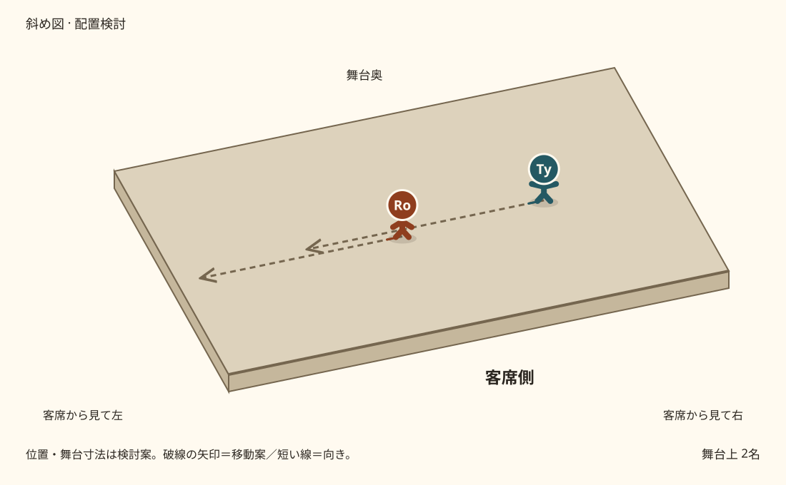
ロミオを呼び止め、追う／位置は検討案
ティボルト
ロミオ。おまえを呼ぶ名は、一つしかない――悪党だ。
ロミオは答えずに立ち去る。ティボルトが追うが、舞台の反対側で見失う
演出メモ・登場人物
結婚したロミオが争いを避けることを、答えずに離れる行動で見せる。
この流れに登場：ロミオ、ティボルト。出入りの順はト書きに従う。
- 始める合図
- ティボルトの呼び止め。
- 次へ進む合図
- ティボルトがロミオを見失い、足を止める。
マーキューシオの決闘
同じ街路
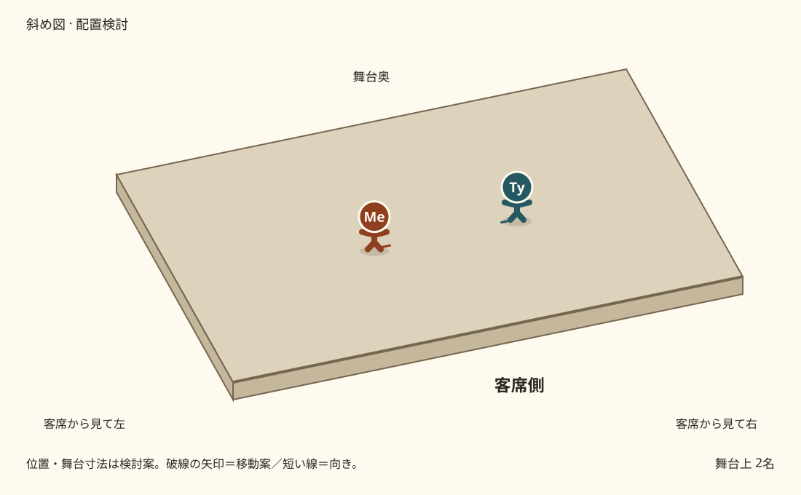
マーキューシオとティボルト／位置は検討案
ティボルトがなお周囲を探していると、マーキューシオが現れる。二人は向き合い、剣を抜く
マーキューシオとティボルト、激しく剣を交える
演出メモ・登場人物
追跡の動きが止まってから、新しい対面が生まれる。実際の技や殺陣の長さは未設定。
この流れに登場：マーキューシオ、ティボルト。出入りの順はト書きに従う。
- 始める合図
- 探すティボルトの前にマーキューシオが現れる。
- 次へ進む合図
- 戦いを見てロミオが戻り、二人の間へ入る。
死と即時の報復
同じ街路
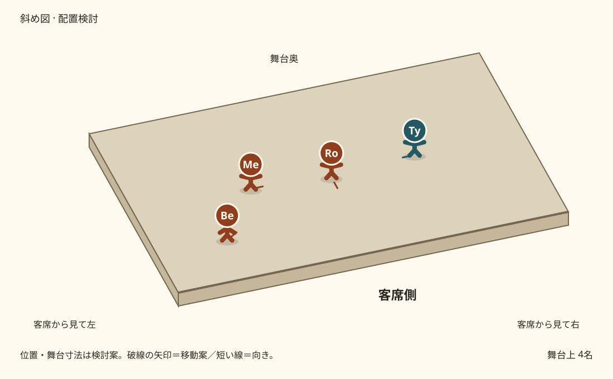
ロミオが止めに入る／位置は検討案
ベンヴォーリオが争いに気づいて近づく。
ロミオが戻り、二人の間へ入る。その腕の下からティボルトの刃がマーキューシオに届く
マーキューシオ
両家とも、疫病に呑まれろ。
ベンヴォーリオが崩れるマーキューシオを支える。ロミオはその傷を見た瞬間、ティボルトへ向き直る
ロミオ
ティボルト、おまえか私か、どちらかがあいつと行く。
ロミオ、間を置かずティボルトへ斬りかかる。二人、剣を交える
ティボルトが倒れる。ベンヴォーリオの腕の中で、マーキューシオも力を失う
演出メモ・登場人物
順序は「ロミオの介入 → 負傷 → 傷を見て即時の報復」。死亡の報告を待つ間や、ティボルトが再登場する間は置かない。元の下訳にあるこの順序へ統合構成の要約も合わせる。
この流れに登場：ロミオ、マーキューシオ、ティボルト、ベンヴォーリオ。出入りの順はト書きに従う。
- 始める合図
- ロミオが止めに入る。
- 次へ進む合図
- ティボルトが倒れ、マーキューシオの身体から力が抜ける。
追放から夜明けへ
街路 → その夜のジュリエットの部屋 → 夜明け
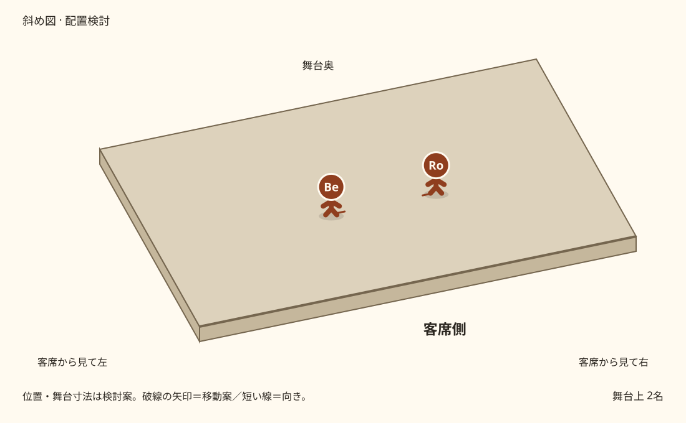
追放の知らせ／位置は検討案
二つの身体とロミオに短い静止。ロミオが離れたところで焦点を移し、倒れた二人は見せ場を終えて退場する。ベンヴォーリオが、裁きの知らせを受けた時間としてロミオに向き直る。
ベンヴォーリオ補筆案
大公の裁きが出た。ロミオ、ヴェローナから追放だ。
ベンヴォーリオが去る。右斜め手前にジュリエットが現れ、ロミオが密かに戻って手を取る。一度抱き合い、光が夜から明け方へ静かに移る。この間に、新婚の二人が共に過ごす一夜を置く。
ジュリエット
もう行ってしまうの？ まだ夜明けには早い。あれはヒバリではなく、夜のナイチンゲールよ。
ロミオ
ヒバリだ。朝を告げる鳥の声だ。
行けば生きられる。ここに残れば、死ぬ。
ジュリエット
朝よ。行って。あの鳥の声が、私たちを引き離していく。
ロミオ
光が増すほど、私たちの悲しみは暗くなる。
ジュリエット
窓よ、朝を入れて。代わりに、私の命を外へ出して。
ロミオ
さらば。最後に口づけを。それから降りる。
ロミオ、窓から下へ降りる
ジュリエット
また会えると思う？
ロミオ
きっと会える。今日の悲しみも、いつか昔話になる。
ジュリエット
嫌な予感がする。今のあなたが、墓の底にいる人のように見える。
ロミオはジュリエットから離れ、追放先のマントヴァへ去る。ジュリエットだけが客席右に残る。
演出メモ・登場人物
追放の一言は今回の補筆。ベンヴォーリオは判決を伝える役で、裁く人物ではない。二人が同居している描写ではなく、追放前の一夜。窓の高低差を実物で作るかは未定。
この流れに登場：ロミオ、ジュリエット、ベンヴォーリオ、マーキューシオ、ティボルト。出入りの順はト書きに従う。
- 始める合図
- 二人の死の後、裁きが下った時間へ進む。
- 次へ進む合図
- ロミオの退場を見届けてから、父キャピュレットが入る。
第2場面の流れ · 3 / 3
仮死と届かない手紙
二人だけの圧力
その朝。客席右／キャピュレット家
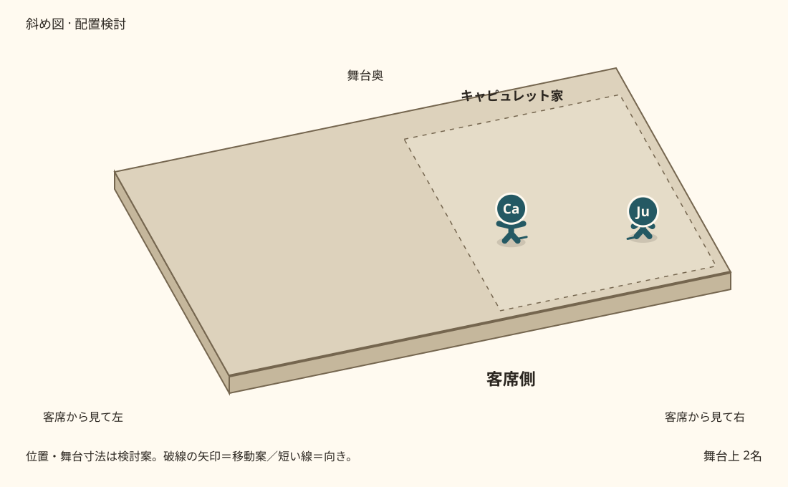
父と娘だけの対立／位置は検討案
舞台にいるのはジュリエットと父キャピュレットだけ。父が近づくほど、彼女の逃げ道が狭くなる。
ジュリエット
結婚相手を選んでくれたことには感謝します。
でも、望まない結婚を喜ぶことはできません。
キャピュレット
何だ、その理屈は。感謝するだの、誇れないだの。
木曜日にはパリスと教会へ行け。
嫌なら、引きずってでも連れていく。
ジュリエット
お父さま、ひざまずいてお願いします。
どうか落ち着いて、ひと言だけでも聞いてください。
キャピュレット
この聞き分けのない、親不孝者め！
木曜に教会へ行くか、二度と私の前に顔を出すな。
口を開くな。言い返すな。
父は返事を待たずに去る。ジュリエットは、父が消えた方ではなく、中央のロレンスの場所へ向かう。
演出メモ・登場人物
乳母や群衆をこの対立に加えない。パリスは名前だけ。父が距離を詰める動きは今回の案。
この流れに登場：ジュリエット、キャピュレット。出入りの順はト書きに従う。
- 始める合図
- 父がジュリエットへ近づく。
- 次へ進む合図
- 父が退場してから、中央にロレンスが現れる。
薬と計画
中央／ロレンスのもと。ロミオはマントヴァにいる
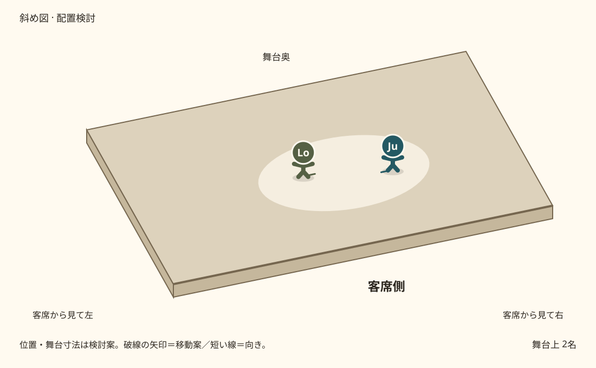
仮死の薬を受け取る／位置は検討案
ロレンスが小瓶を示す。ジュリエットはその瓶と、彼の目を交互に見る。ロミオはここにはいない。
ロレンス修道士
その借り物の死の姿は、四十二時間続く。
それから、心地よい眠りから覚めるように目を覚ます。
朝、花婿が迎えに来たとき、皆はおまえが死んだと思う。
晴れ着のまま、覆いもかけず棺台に乗せられ、
キャピュレット家の眠る古い墓所へ運ばれるだろう。
それまでに、ロミオには手紙で計画を知らせる。
私とロミオで目覚めを待ち、その夜、彼がマントヴァへ連れ出す。
これで今の苦境から抜け出せる。
ただし、気まぐれや恐れに、決意をくじかれないことだ。
ジュリエット
貸して、早く！ 恐れの話なんてしないで。
ジュリエットが小瓶を受け取り、客席右の部屋へ戻る。彼女が去ってからロレンスは手紙を書き、ジョンに託す。ジョンは封を開かず、旅へ向かう。
演出メモ・登場人物
手紙の受け渡しを観客に見せ、後の入れ違いで「あの計画の手紙」と分かるようにする案。四十二時間は物語上の時間で、上演尺ではない。
この流れに登場：ジュリエット、ロレンス修道士、ジョン修道士。出入りの順はト書きに従う。
- 始める合図
- ジュリエットがロレンスへ助けを求める。
- 次へ進む合図
- ジョンの出発を見せてから、右のジュリエットへ焦点を戻す。
仮死と葬送
客席右の寝室 → 翌朝 → 葬送
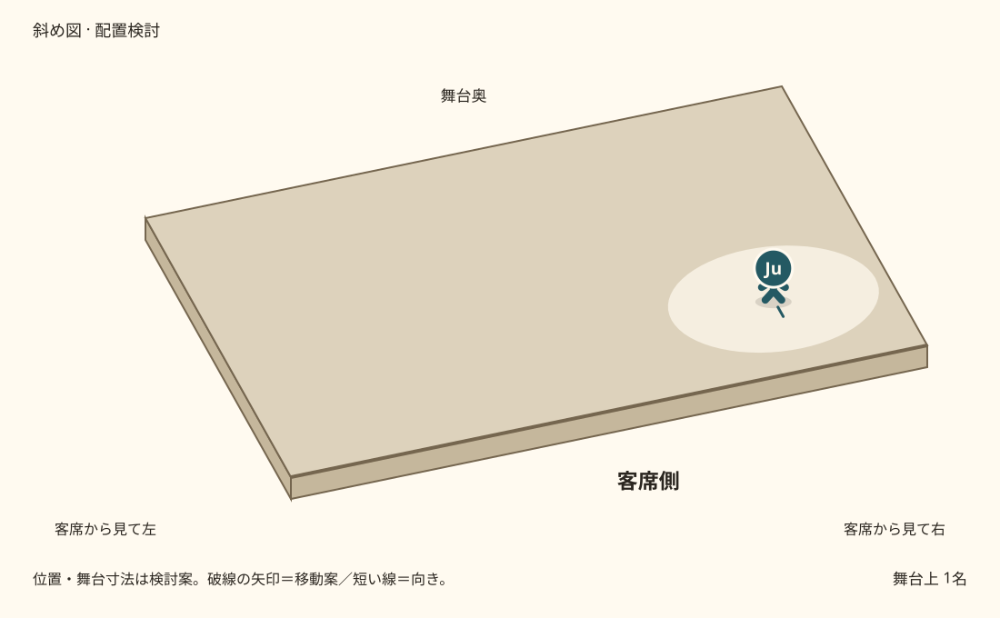
一人で薬を飲む／位置は検討案
ジュリエット
さようなら。次にいつ会えるかは、神さまだけが知っている。
冷たい恐れが、血の中を駆け上がってくる。
命のぬくもりまで、凍りつきそう。
呼び戻そうか。
そばにいてもらえば、落ち着ける。
乳母！――でも、ここにいて何ができるの？
この悲しい場面は、私一人で演じなくては。
さあ、この小瓶を。
ジュリエット
ロミオ、ロミオ、ロミオ。あなたのために、飲みます。
ベッドに身を投げる
ジュリエットは動かなくなる。光で一夜を越す。朝、乳母が呼びかけても反応がなく、父も入って立ち止まる。二人は死んだと思い込む。
乳母と父はジュリエットの傍らで身体を沈め、葬送の形へ変わる。ここからは寝室ではなく、墓所へ送る道。ベンヴォーリオがその葬送を見かけ、離れていく。
弔う二人がジュリエットを囲み、三人の姿が袖へ消える。身体を支える方法は稽古で決める。墓所そのものは次の大場面で現れる。
演出メモ・登場人物
発見・葬送と、ベンヴォーリオがそれを目にする動きは今回の補足案。観客には仮死と分かっているが、家族は計画を知らない。ベンヴォーリオが見るのは寝室ではなく葬送。
この流れに登場：ジュリエット、乳母、キャピュレット、ベンヴォーリオ。出入りの順はト書きに従う。
- 始める合図
- ジュリエットが一人、小瓶を手にする。
- 次へ進む合図
- 葬送が去り、知らせを運ぶベンヴォーリオの動きへつなぐ。
届かない知らせ
マントヴァ → 互いにすれ違う旅路
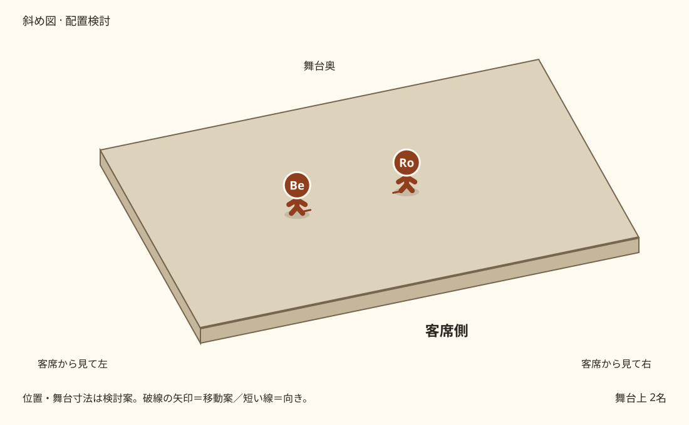
誤った死の知らせが届く／位置は検討案
旅路を進んだベンヴォーリオが、追放先のロミオに会う。ここはヴェローナの家ではなく、マントヴァ。
ベンヴォーリオ補筆案
ジュリエットが亡くなった。墓所へ送られるのを見た。
ベンヴォーリオは去る。ロミオは一度、息を止める。それからヴェローナへ引き返す。
封書を持ったジョンが、逆方向から同じ旅路へ入る。一人が進んだ軌跡を、もう一人が少し遅れてなぞる。
同じ場所に手が伸びる。だが、その手前で相手の身体はすでに抜けている。回る・くぐる・すり抜ける動きをずらして重ね、「あと少しで届く」を繰り返す。封書はずっとジョンの手にある。
二人は一度も目を合わせない。互いを追っているのではなく、別々の目的で急いでいる。最後にジョンは手紙を抱えたまま進み、ロミオは反対へ抜ける。
二つの動きが離れ切ったところで、第2場面を閉じる。ロミオは仮死の計画を知らず、本当に死んだと信じたまま墓所へ向かう。
演出メモ・登場人物
死の知らせをベンヴォーリオに託すのは、10名の既存配役で因果を見せるための今回の脚色案。原作の使者バルサザーの役割をここだけ兼ねる。サーカスの種目・回数は未設定。旅路の左右は両家を表さず、第3場面で客席左＝墓所へ場所を切り替える。
この流れに登場：ロミオ、ベンヴォーリオ、ジョン修道士。出入りの順はト書きに従う。
- 始める合図
- 誤った死の知らせが、計画の手紙より先に届く。
- 次へ進む合図
- 第3場面：客席左の墓所を立ち上げ、そこへロミオが到着する。
今回組み立てたつなぎのト書き
今回反映した演出
- 約束と結婚では、乳母の代わりに大道具さんが舞台袖から大声でジュリエットを探す。姿は見せない。
声の担当部門は大道具に決定。具体的な担当者は未定。呼びかけの文言と二人の反応はAI案。 - 窓辺から秘密の結婚へは暗転せず移る。二人は手を離して別々に退き、ロレンスと背中の列が先に中央をつくる。ロミオは客席左斜め、ジュリエットは客席右斜めから別々に入る。
手を離すタイミング、七名の横移動、二人の別々の斜めからの入口は本人が採用した構成。実際の歩数・速度・灯りは未決定。
つなぐために補ったこと
- 結婚の手を重ねた後、背中の列をほどく順序。
- ベンヴォーリオが追放の判決を一言で伝える。判決を下すのは大公。
- ベンヴォーリオが葬送を目にしてマントヴァへ死の知らせを運ぶ。原作のバルサザーの役割を既存配役へ移す脚色。
- サーカスの入れ違いは、同じ軌跡を時間差で通る身体表現として仮置き。手紙の受け渡しは成功しない。
左右は客席から見た方向。家の場所は左＝モンタギュー、右＝キャピュレット。街路・マントヴァ・旅路を両家の陣地と同一視しない。次の第3場面では客席左が墓所になる。
元の資料との対応・これから決めること
既存の日本語下訳を台詞のまとまりとして再掲し、行動でつなぐ構成稿。新しい台詞とト書きは脚色・演出案であり、原文との一対一の全訳ではない。本人の最終推敲前。
整合をそろえた箇所
- 統合構成の決闘要約を、元の下訳の「ロミオ介入→負傷→即時報復」に修正。
- 旧第10場面の「右の墓所」へ向かう表記は引き継がず、第3場面の客席左の墓所へつながる旅路として再構成。
これから決めること
- 本人による台詞と追加案の推敲
- 殺陣とサーカスの具体的な動き
- 各キューと第2場面全体の尺
- 舞台寸法、照明の数値、Stage Sketchへの実データ化
内部キューは元の番号を保持しています。構成データに元の台詞の行番号と追加案の区別を記録しています。